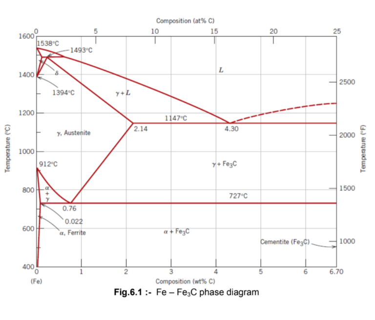
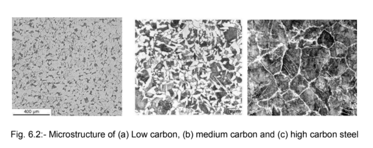

<-- Introduction:
Low, medium and High Carbon Steel are types of ferrous materials and are most important to the engineering application because of their wide range of properties and verity of applications. Theoretically, steels are the alloys of iron and carbon in which the carbon content is between 0.008 to 2.0 per cent. The structures and properties can be discussed with the help of Fe-Fe3C equilibrium diagram.

<-- Classification of Steel:
The steels are classified by various methods and each method is based on a definite criterion as follows,
i) Amount of carbon:
a) Low carbon steels (0.008 - 0.3%C)
b) Medium carbon steels (0.30 - 0.60%C)
c) High carbon steels ( 0.60 - 2.00%C)
ii) Amount of alloying elements and carbon
iii) Amount of deoxidation
iv) Method of manufacture
v) Form and use
<-- Sample preparation:
Preparation of metallographic specimens generally requires five major operations:
i) Sectioning
ii) Mounting (which is necessary when the sample cannot be held properly due to its shape and/or size, while polishing)
iii) Grinding
iv) Polishing
v) Etching
<-- Metallographic Observation:
Observe the microstructure of the final etched specimen under the microscope and analyse the different phases present in it.
<-- Microphotography:
In this laboratory, you will report the microstructures of prepared samples in specific formats. You will be expected to sketch the microstructure that you see under the microscope by hand. While drawing the microstructure there are several things to keep in mind. First, the magnification that you use depends upon the scale of the microstructure you are looking for. It is IMPORTANT to know in advance of the lab class what the expected microstructure for your samples are and at what scale they should appear. In sketching the microstructure, you should indicate only the important features of the structure that you observe-don't make a photographic reproduction of the microstructure. Simple sketches show that you know what the important structures are and have identified them in the cross section.
Let us first look at the Fe rich portion of classical Fe-C phase diagram (Figure 2). Cementite is an intermetallic compounds orthorhombic crystal structure. This phase diagram depicts a number of invariant points. If we consider an alloy with 0.8wt% C and heat it to 9500C (1223K), it forms single phase austenite having FCC crystal structure. Austenite has high solubility of carbon (max. 2.11wt% at about 11500C) On cooling such an alloy below 7230C, the alloy undergoes eutectoid transformation forming two phases, ferrite(α) and cementite, simultaneously. This structure is known as pearlite, which consists of alternate lamellae of α and Fe3C. Steels having composition less than 0.8 wt% C (known as hypoeutectoid steels) has primary α and pearlite in the microstructure because on cooling such a steel from region, it forms α first until the composition of the remaining reaches 0.8 wt% at temperature of 7230C, and this austenite undergoes eutectoid transformation. Therefore, microstructure of hypoeutectoid steels consists of proeutectoid α with lamellar pearlite in varying proportions depending on the alloy composition. Similarly, Fe-C alloy compositions more than 0.8 wt% C are termed as hypereutectoid steels. The microstructure of such steels consists of pro eutectoid Fe3C with lamellar pearlite.
